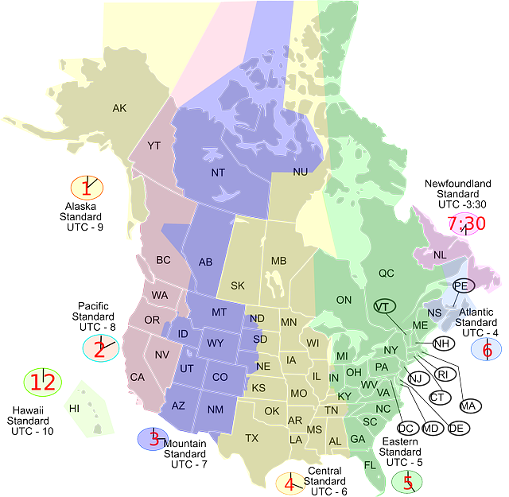
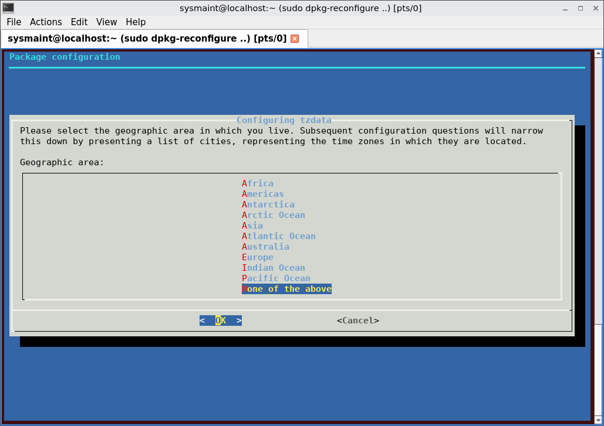
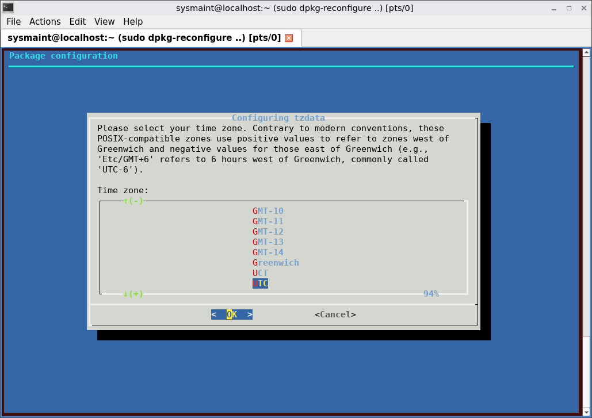
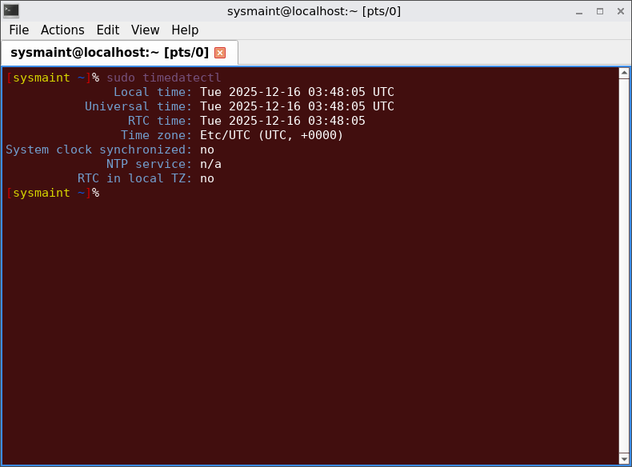

LoginDocumentationOperating System Software and UpdatesPrevious page: LoginIndex page: DocumentationNext page: Operating System Software and UpdatesSystem Timezone

Information about the system timezone setting and instructions on how to change it.
Installation Method Specific
- A) If Kicksecure is installed using ISO: the timezone can be configured during the ISO installation process.
- B) If Kicksecure is installed using Distribution Morphing: the timezone remains unchanged by Kicksecure. It remains as originally set by the user or installer.
Unspecific to Kicksecure
Since Kicksecure is based on Debian, changing the timezone does not differ from Debian. Therefore, users may also refer to Debian-specific documentation such as their TimeZoneChanges documentation.
System Timezone Setting versus User Timezone Setting
Note:
- A) System setting: The timezone configured
via
/etc/timezoneor/etc/localtimeis considered a "system setting". - B) User setting: The timezone displayed by graphical interface widgets, such as the LXQt clock, is a "user setting" and might be independent of the system setting.
Change System Timezone
For example, to change the timezone to UTC:
1. Open a terminal.
2. Run the following command:
sudo dpkg-reconfigure tzdata
Figure: Configuring tzdata - region selection

3. Select "None of the above".
4. Press Enter⏎ on "OK".
Figure: Configuring tzdata - timezone selection

5. Select UTC.
6. Highlight "OK" and press Enter⏎.
7. Done.
The timezone should now be changed.
8. Verify timezone setting.
To confirm, run the following command:
sudo timedatectl
9. Review the output of
timedatectl.
It should appear similar to the following:
Figure: timedatectl sample
output

10. Done.
Qubes Specific